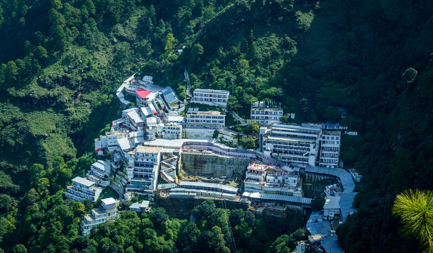
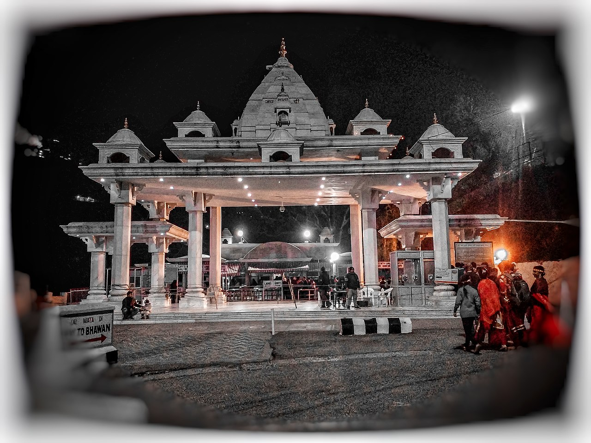

Experience the divine journey through the Trikuta Mountains.
Scroll Down
Journey to the Holy Shrine

Ek Trip ki Kahani - Katra to Vaishno Devi
Are Kratakshi, sun na, mai tujhe apni Vaishno Devi ki trip ke baare me btata ho. Ab soch, humara trip start hota hai Katra se. Subah-subah hum station pe Pauche, aur vha ka mahol hi alag tha. Har taraf log hi log, sab apne mn me ek alag energy ke saath aaye the. Sabke mn me ek hi maqsad tha - Mata Rani ka darshan!
Humne sabse phle apne bags locker me rakhe aur ekdum light feel kiya. Fir humne ek choti si chai ki dukaan se chai aur bun-maska khaya. Are wahh Kratakshi, vha ki chai ka taste abhi bhi yaad hai, ekdum kadak aur full energy wali! Chlo, fir shuru hua humara safar. Pahadon ke raste, thoda uphill, thoda smooth. Pehle toh sab theek lag raha tha, par jaise hi raste me vo steep chadhai aayi na, saans phoolne lg gyi. Pr jab neeche dekha, toh pura Katra ekdum chhota lag raha tha, aur vha ki view, uff! Ek taraf nature ke sundar scene aur doosri taraf logon ka "Jai Mata Di" ka jaikara - ekdum goosebumps de diya!
Step 1: Begin your trek from Katra, a small town full of bustling energy.

Raste me humne ek spot pe ruk ke prasad liya aur thoda refresh hue. vha ek cute si dukaan thi jahan se maine ek maala aur ek chota sa lock toh kharid hi liya. Tujhe pata hai, log vha pe apne mann ke wish ko lock krte hai, aur vo maala unki wish puri hone ki dua deta hai.
Fir shaam hote-hote hum Bhawan ke paas pahuche. Vha ka mahaul na, ekdum divine! Pehle darshan ke liye line me lage, thoda time lga, par jab andar pahuche na, bas mann ekdum shant ho gaya. Mata Rani ke darshan karte hi saare thakan khtam ho gyi.
Step 2: Ascend through lush green trails and scenic views.